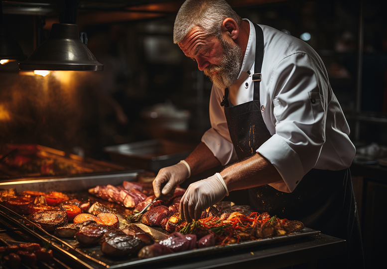

We built this recipe browser because finding a good recipe should not take longer than cooking it. Every recipe on the site is tested, easy to follow and sorted by category.
Whether you are looking for a quick weekday dinner or something special for the weekend, you can search, filter and save your favourites in one place.
